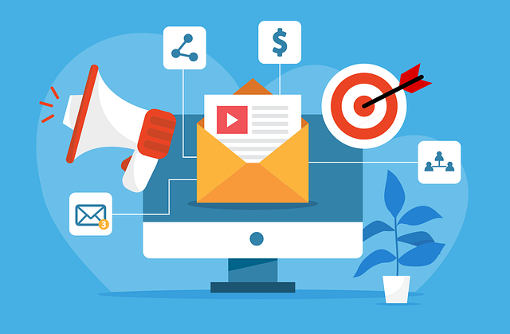

E-Marketing, which is also known as Electronic Marketing is when people use the internet to talk to customers. This is different from the way of doing things, where people would put up big signs or ads on television. E-Marketing uses the internet to send messages that're just for certain people and it is easy to see if these messages are working.
The main idea of E-Marketing is to be where people are, when they're there. Businesses can use information and computers to reach people around the world at any time of day. They can even see how many people looked at an ad clicked on a link or bought something. This is what E-Marketing is about it is about using the internet to connect with customers and get them to do something. By using E-Marketing businesses can be open 24 hours a day 7 days a week. Reach a lot of people, with E-Marketing.
The philosophy of marketing serves as a strategic compass that determines how a business balances its internal goals with the external needs of its customers. Historically, these orientations have evolved from a focus on production and product-which prioritize manufacturing efficiency and technical quality-to the aggressive selling concept that relies on heavy promotion. Modern business, however, primarily operates under the marketing and societal concepts, which shift the focus toward deep customer satisfaction and long-term ethical impact. By adopting a specific philosophy, a brand decides whether it will compete through low costs, innovation, or a dedicated commitment to the well-being of its community.
| Category | User-Centered Design (UCD) | Product-Centered Design |
|---|---|---|
| Perspective | Focuses on user needs and requirements | Focuses on the features and functionality of the product |
| Goal | To create a product that provides a high level of user satisfaction | To create a product based on technical requirements and standards |
| Methodology | Based on user feedback and iterative testing | Based on the designer's or engineer's technical decisions |
| Testing | Conducted with real users throughout the process | Focuses on technical testing and error-free operation |
| Ease of Use | High priority; ensures users can achieve goals easily | Priority is given to technical complexity and capability |
| Flexibility | Designed to accommodate various user behaviors and needs | Often more rigid; users must adapt to how the product works |
| Output | A product that is intuitive and user-friendly | A product that is technologically advanced and functional |
Online advertising (also known as digital advertising) is the process of using the internet to deliver promotional marketing messages to consumers. In 2026, this field has evolved beyond simple banners into a highly sophisticated ecosystem driven by Artificial Intelligence (AI) and real-time data.
This section explains how technology allows businesses to move away from mass production toward products tailored to individual needs.
This refers to using databases to identify the goods and services required by customers and performing the necessary promotions for them. In this context, the database is used as a direct communication medium.
The difference between direct marketing and database marketing is that database marketing takes quantitative information—such as customer behavior and attitudes—into account and utilizes it when dealing with the customer. In standard direct marketing, such detailed information is not typically considered.
There are two types of marketing-related databases:
This involves predicting the future behavior of a business based on current and historical data. By analyzing past transactions and events, businesses can understand potential future situations and opportunities to make informed decisions. This can be used by any type of business organization.
Data mining involves studying the nature and patterns of data to extract meaningful insights. This can be described as information obtained through the analysis of past data. This process is a crucial factor in marketing, and primary methods such as Data Fishing and Data Shopping are used for this purpose.
In this process, data analysis is performed using a small portion of data randomly selected from a large dataset.
ompetitive advantages are the benefits an organization gains to outperform its rivals. Institutions that leverage Information Technology effectively can surpass those that do not; organizations unable to face this technological competition often drop out of the market.
Key advantages include: